One recorded capture (CSE-CIC-IDS2018, 2018-02-14) feeds two detection chains: the flow chain (CICFlowMeter, signature rules and XGBoost, grouping, learning) and Suricata. Both arrive in one queue, behind one login. The Admin controls the replay; the analyst works the queue as it fills.
admin / admin-demo — runs the replay.
g.ang / analyst-demo — Tier 1 and Tier 2 work.
t2.ang / tier2-demo — the Tier 2 analyst; its queue shows Tier 2 cases only.
Use two browser windows (or one normal and one private window), because one browser keeps one session.http://127.0.0.1:5173.analysis/phase-f/workflow-layout/index.html
(sections 3 and 4).Built from an automated run of soc-packet.spec.ts on a copy of the demo data. Every screenshot is
from that run, and the run checked the database after each write. Orange boxes mark what to click or read; their
positions were measured by the browser. The run fast-forwards the replay after step 4; in a demo, let it play.
Steps 19–22 were captured later on the live demo app (replay step 150) by capture_guide_extra.mjs, with
two earlier verdicts per family recorded through the same API first.
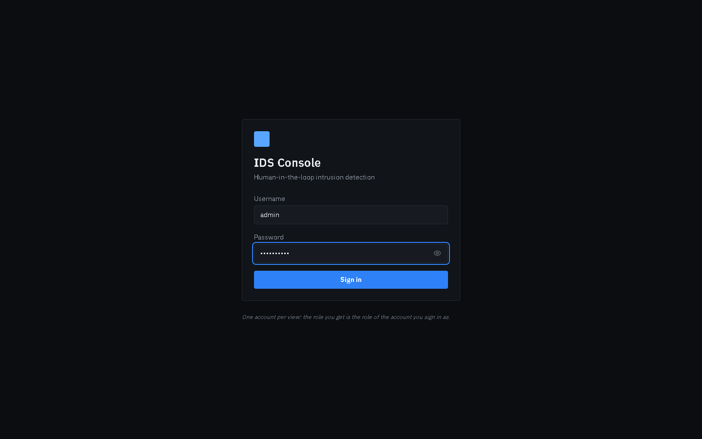
1Click: Type admin / admin-demo and click Sign in.
You see: The Admin pages open. Analysts use the same sign-in page. The role decides what each account sees.
Why (SOC): There is one front end, one API and one login. No separate login for the flow chain or for Suricata.
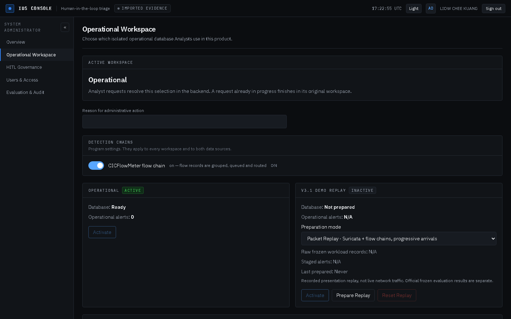
12Click: Left menu Operational Workspace. In Replay preparation mode, choose Packet Replay. Click Prepare Replay.
You see: The Replay card shows Mode: Packet Replay and Capture steps arrived: 0 / 160.
Why (SOC): The replay is isolated. The Operational workspace and the frozen evaluation do not change.
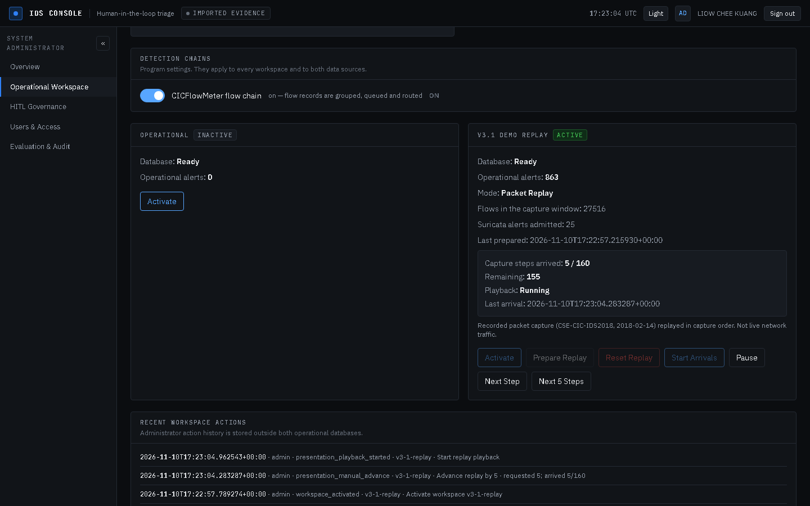
123Click: Click Activate on the Replay card. Click Next 5 Steps for a quick start, then Start Arrivals.
You see: After 5 steps the queue holds 863 items: 838 from the flow chain and 25 from Suricata. Playback: Running adds one capture step every 5 seconds. Pause, Next Step and Next 5 Steps stay available.
Why (SOC): The Admin controls the pace of the simulation. Each step is an equal share of the recorded capture time.
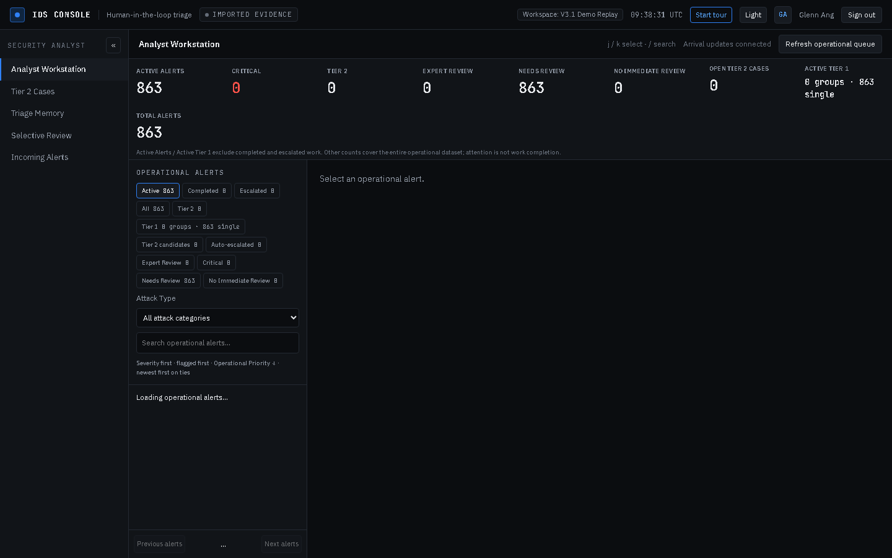
123Click: In a second browser window, sign in as g.ang / analyst-demo.
You see: The header says Workspace: V3.1 Demo Replay and Arrival updates connected. The Active tab reads All 863.
Why (SOC): Every analyst sees the workspace that the Admin activated. Nothing needs to be selected.
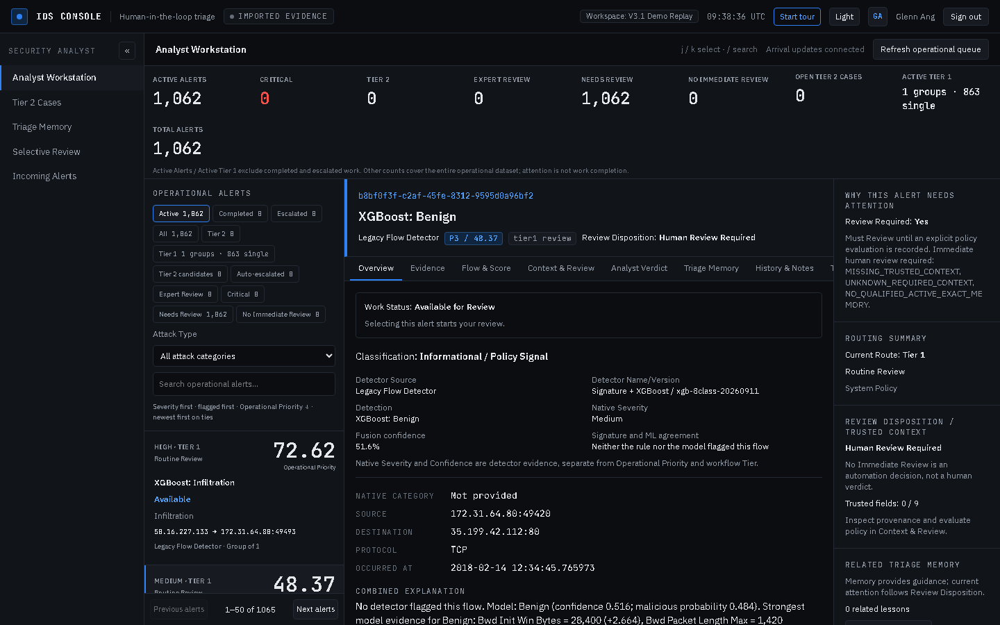
1Click: Do nothing. Wait for the next capture steps.
You see: The Active tab changes to All 1,232 by itself.
Why (SOC): Alerts from both chains enter the queue as the traffic is processed, as in a live SOC shift.
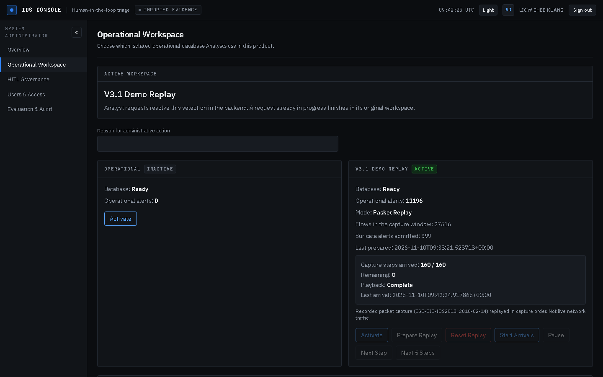
1Click: Let the arrivals run to the end (about 13 minutes), or click Next 5 Steps to go faster.
You see: Capture steps arrived: 160 / 160, Playback: Complete. The queue holds 11,196 items: 10,797 flow and 399 Suricata. 16,724 flagged flows became 5 groups. 10 Tier 2 cases opened by rule.
Why (SOC): Grouping turns thousands of flagged flows into a few work items.
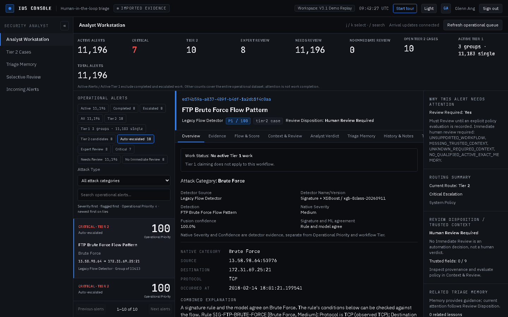
12Click: Click the Auto-escalated tab.
You see: 10 cases. 2 are flow brute-force groups, escalated because the rule and the model agree at score 100. 8 are Suricata alerts with a signature that the system cannot classify (Expert Review).
Why (SOC): The machine routes the clear cases. A human decides the rest.
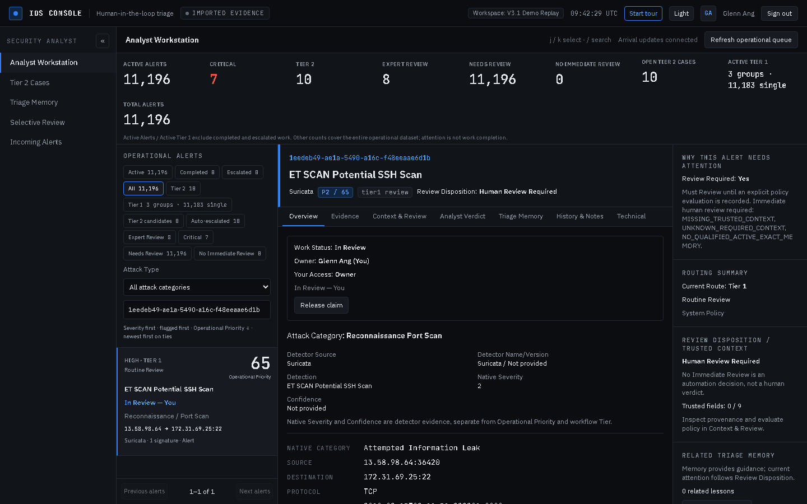
12Click: Open the Tier 1 list and click a Suricata row.
You see: Here: ET SCAN Potential SSH Scan from 13.58.98.64 to 172.31.69.25:22. The row says In Review — You. The work panel says Your Access: Owner.
Why (SOC): Other analysts see who owns it and do not duplicate the work.
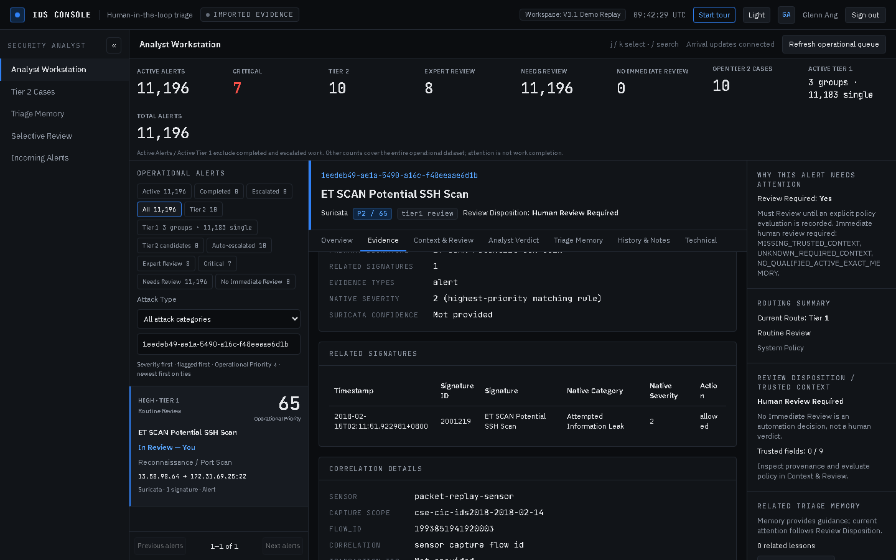
12Click: Open the Evidence tab.
You see: The signatures that fired on this flow, their native category and severity, and the Suricata flow id.
Why (SOC): The analyst checks the rule evidence, not only a title.
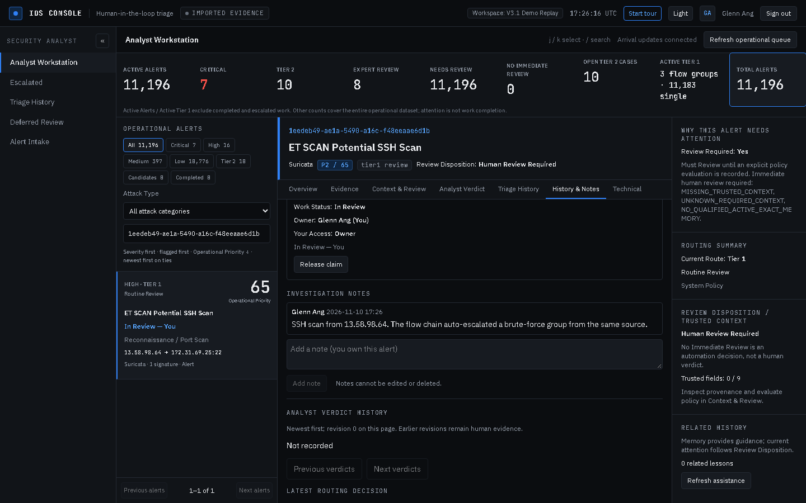
12Click: Open History & Notes, type a note, click Add note.
You see: The note shows with your name and time. Here it records that the flow chain escalated a brute-force group from the same source (13.58.98.64, 11,613 flows).
Why (SOC): A shift lead can follow the reasoning later. The two chains confirm each other.
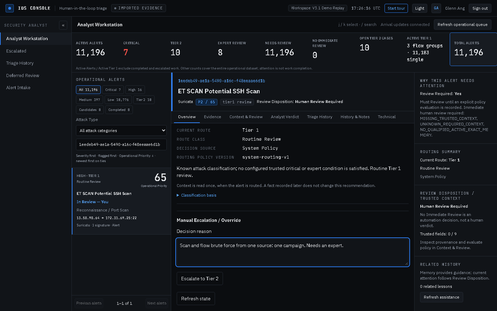
12Click: On Overview, type a Decision reason. Click Escalate to Tier 2.
You see: Escalate to Tier 2 stays off until a reason is typed.
Why (SOC): The system routed this alert to Tier 1. A human overrides it and states why.
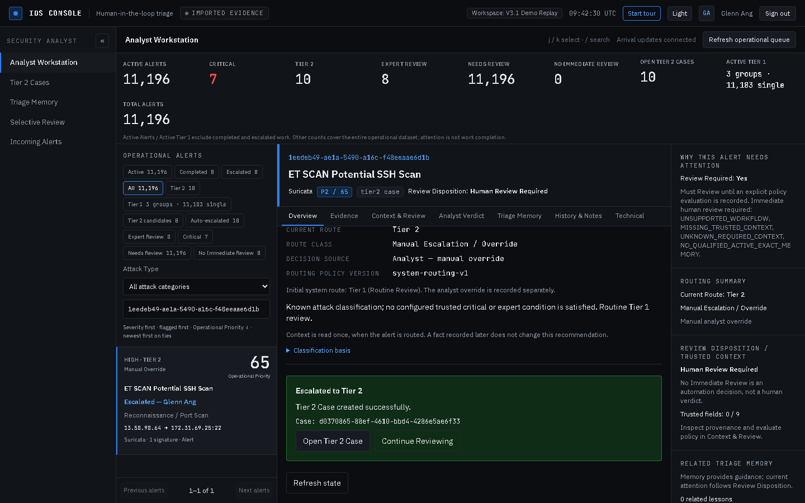
1Click: Nothing to click.
You see: Escalated to Tier 2 — Tier 2 Case created successfully. The alert leaves the Active list.
Why (SOC): Tier 1 is done with it; the expert takes over.
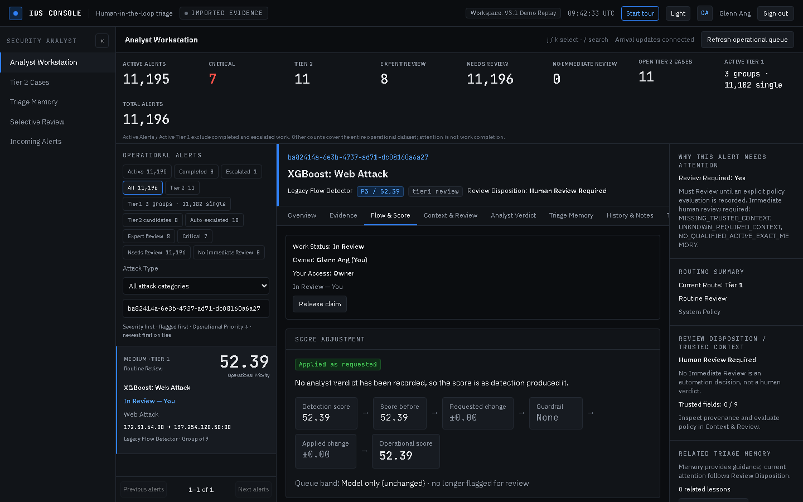
1Click: Open a flow group from the Tier 1 list, then the Flow & Score tab.
You see: Here: XGBoost: Web Attack, a group of 9 flows from 172.31.64.80. Ports, packet counts, rule conditions and the model's top features.
Why (SOC): The analyst judges evidence, not only a score.
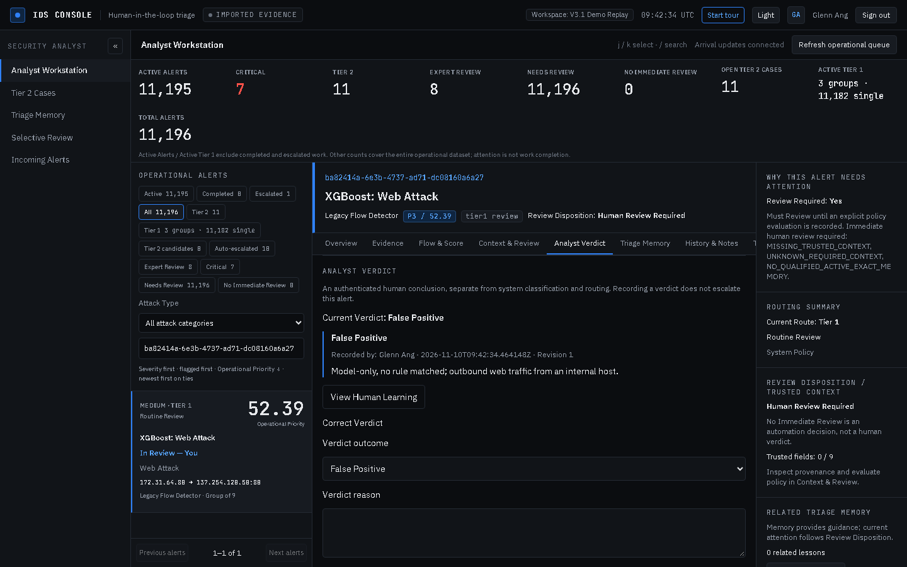
12Click: Open Analyst Verdict. Pick an outcome, type a reason, click Record Verdict.
You see: Work status Completed — Reviewed by Glenn Ang.
Why (SOC): A verdict feeds the learning loop for both chains: it moves this alert at once, inside the guardrails. One verdict alone does not re-rank its family; three agreeing verdicts do (steps 19–21).
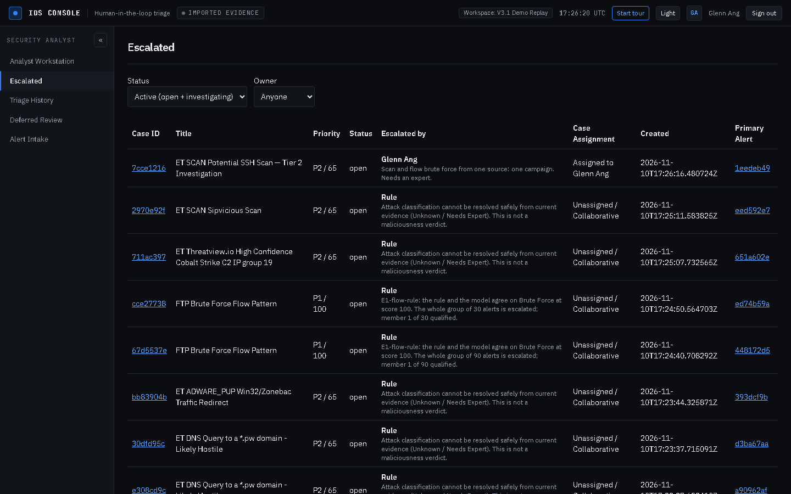
123Click: Left menu: Escalated.
You see: Default filter Active. Rule cases say Rule with the rule sentence. Your case shows Glenn Ang and your reason.
Why (SOC): The expert sees open work and who or what sent each case.
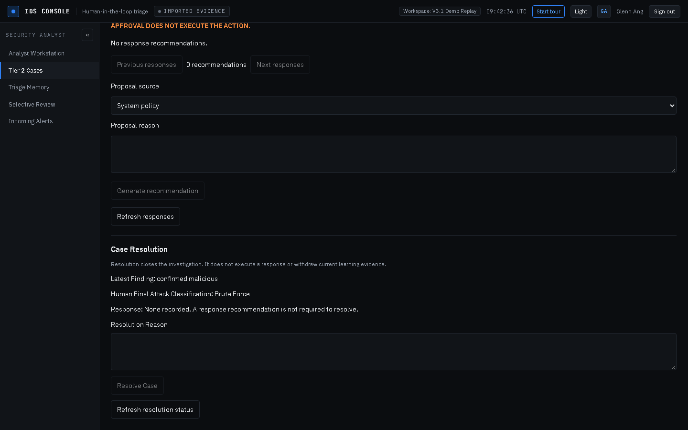
12Click: Open your case. Audit Timeline: reason, Start investigation. Investigation Conclusion: finding, class, reason, Record Investigation Conclusion.
You see: Resolve Case stays off until a conclusion exists. Then it turns on.
Why (SOC): A case cannot close without a recorded finding.
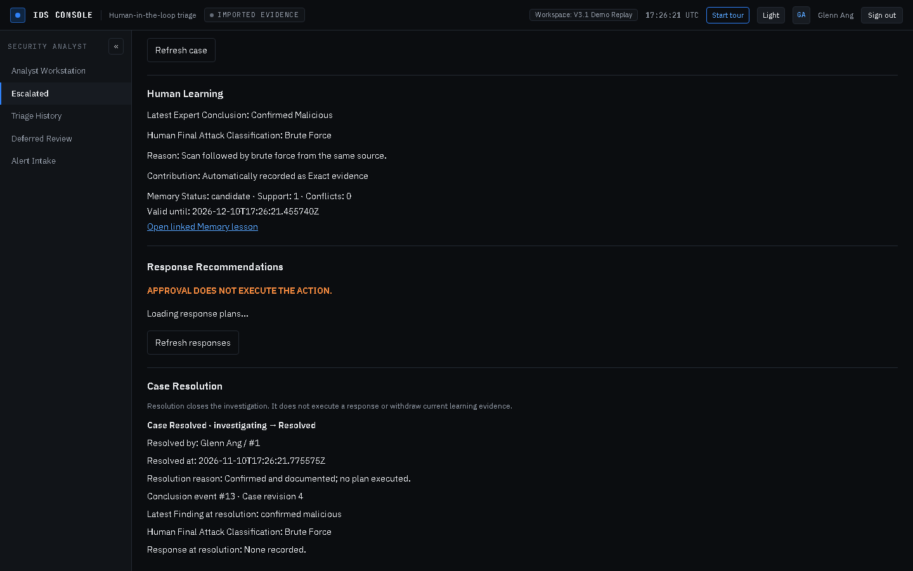
1Click: Type a Resolution Reason. Click Resolve Case.
You see: Resolved by: Glenn Ang. All edit buttons go. The case leaves the Active list but stays under Status = Resolved.
Why (SOC): The record is fixed for audit.
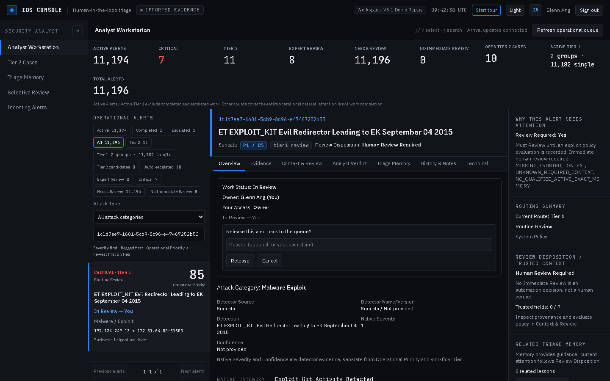
1Click: On an alert you own, click Release claim, then Release.
You see: The alert is available to others again.
Why (SOC): Shift change or wrong pick: work returns to the queue. Idle claims also expire after 15 minutes.
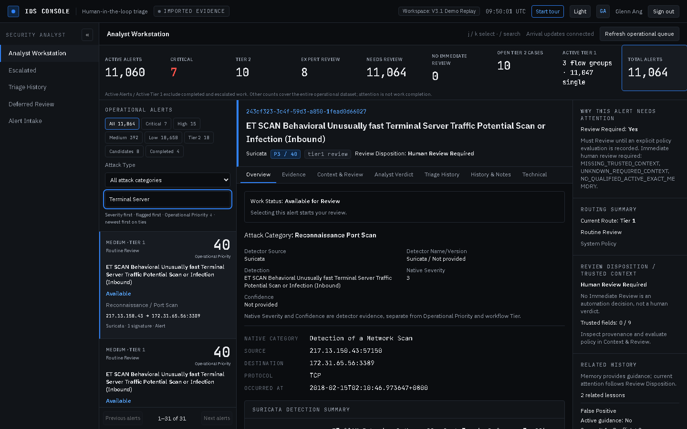
12Click: In the queue search, type Terminal Server.
You see: Every row is the same signature on the same internal host (172.31.65.56): one Suricata family. All rows read 40. Two earlier false-positive verdicts already sit on this family; nothing else has moved yet.
Why (SOC): One verdict is an opinion. The system waits for three agreeing verdicts before it applies a lesson to alerts nobody judged.
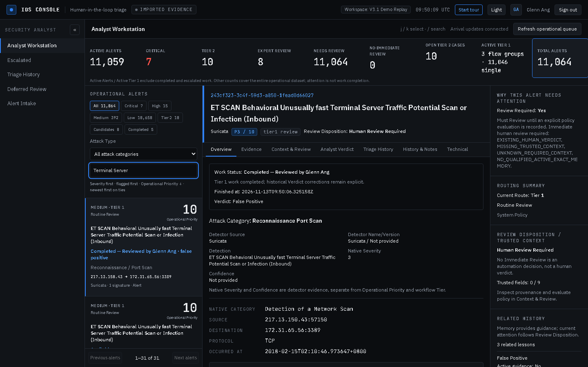
12Click: Open a row marked Available. Analyst Verdict → False Positive, type a reason, Record Verdict.
You see: The judged row reads Completed — Reviewed by Glenn Ang · false positive. The rows nobody judged, still marked Available, drop from 40 to 10 — every member of the family moves down the queue at once.
Why (SOC): This is the alert-fatigue reduction: three decisions cleared a 31-item family. The guardrail caps the change at −30, and a critical alert never falls below 70.
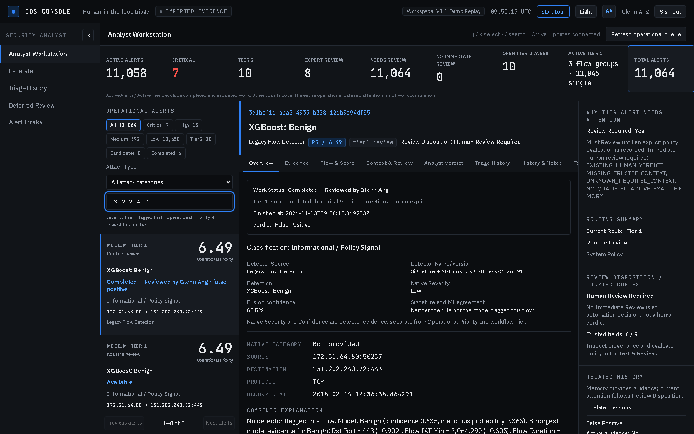
12Click: Search 131.202.240.72. Record False Positive on an Available row at 36.49 (third verdict on the family).
You see: The judged row reads Completed. The other row, still Available, drops from 36.49 to 6.49. This family is CICFlowMeter + XGBoost flows on port 443 to one external server.
Why (SOC): One verdict form, one rule, both chains. The analyst does not need to know which detector raised the alert.
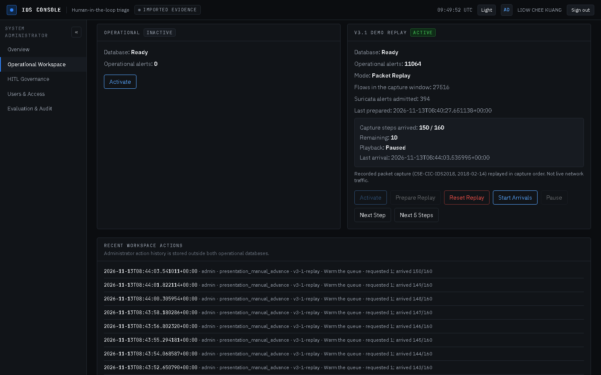
12Click: As admin, open Operational Workspace. Click Reset Replay and confirm.
You see: Reset Replay is available while the Replay is Active (here at 150 / 160). Analysts move to the Operational workspace, their open claims are released, and their dashboards read 0 without a reload. Then Prepare Replay, Activate, Start Arrivals to play from 0.
Why (SOC): The Administrator supersedes analysts: a demo can restart even while analysts are working. The audit log records how many claims the reset released.